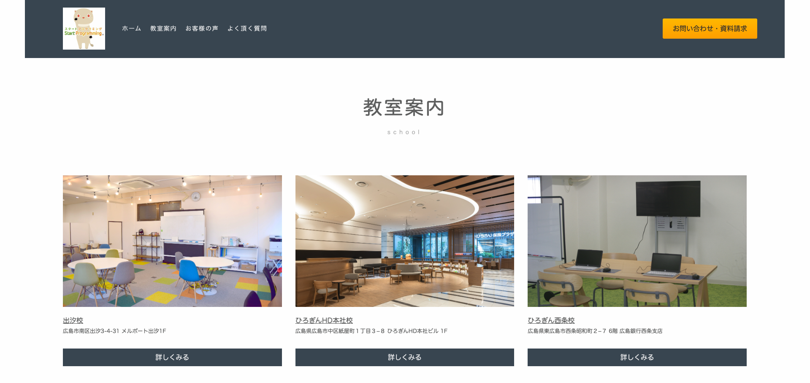
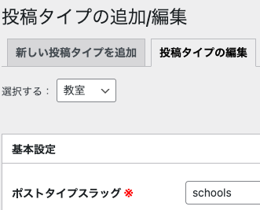
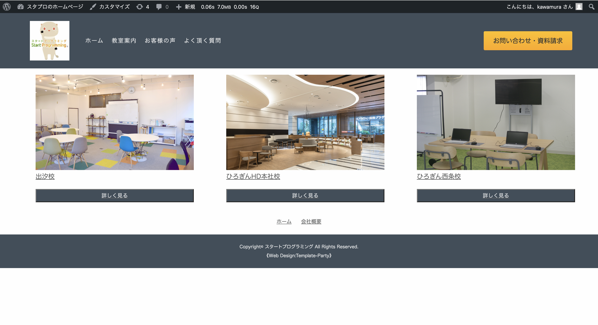

php
現在、教室案内（画像の箇所）はHTMLでベタ書きをしています。
これをカスタム投稿タイプで作成し、管理画面から内容の作成やメンテナンスを行えるようにしましょう！

①まずは、新しいカスタム投稿タイプを作成していきます。
今回は教室案内に関する投稿タイプを作成するので、スラッグは「schools」、表示名は「教室」とします。
②次に、ブログの内容を管理画面から入力していきます。
③アーカイブページ（一覧ページ）を作るために、投稿タイプの編集を行う必要があります。
動画のように、アーカイブありを「真実（true）」に変更し、スラッグを入力します。
これをしないと一覧ページを作ることが出来ないので、必ず設定しましょう。
④カスタム投稿タイプで作成した投稿を表示するページを作るには、「archive-〇〇.php」というファイルを作成する必要があります。
〇〇には、自分で設定したスラッグを入れる必要があります。今回は「schools」というスラッグで作成したので、〇〇には「schools」が入ります。（画像参照）

動画のように、「archive-schools.php」というファイルを作成し、カスタム投稿タイプで作成した投稿を表示させるコードを書いていきましょう！
カスタム投稿タイプで作成した投稿が上手く表示されれば成功です！
「archive-schools.php」に書くコードは、こちらのコードを見ながら書いてください。
また、このコードはカリキュラム14の内容で出てきたものと全く同じものになります。コードの意味がよく分からない場合はカリキュラム14を見て確認してみましょう！
<?php get_header(); ?>
<div class="list-grid">
<section class="custom_schools">
<?php
$args = [
'post_type' => 'schools',
'posts_per_page' => 3
];
$the_query = new WP_Query($args);
?>
<?php if ($the_query->have_posts()) : ?>
<ul>
<?php while ($the_query->have_posts()) : $the_query->the_post(); ?>
<li>
<a href="<?php the_permalink() ?>">
<div>
<?php if (has_post_thumbnail()) : ?>
<?php the_post_thumbnail(); ?>
<?php endif; ?>
</div>
<div >
<div ><?php the_title(); ?></div>
<a href="<?php the_permalink() ?>"><button>詳しく見る</button></a>
</div>
</a>
</li>
<?php endwhile; ?>
</ul>
<?php wp_reset_postdata(); ?>
<?php endif; ?>
</section>
</div>
<?php get_footer(); ?>
⑤表示された投稿が縦並びになっているので、cssでレイアウトを調整していきます。
今回はcssの学習がメインではないため、下記のcssのコードをそのまま貼り付けてください。
cssの記述場所は画像を参考にしてください。
.custom_schools ul {
display: grid;
grid-template-columns: repeat(3, 1fr);
gap: 2rem;
}
.custom_schools li{
list-style: none;
margin-left: 50px;
}
画像のように、レイアウトが綺麗に整えば成功です！

なし